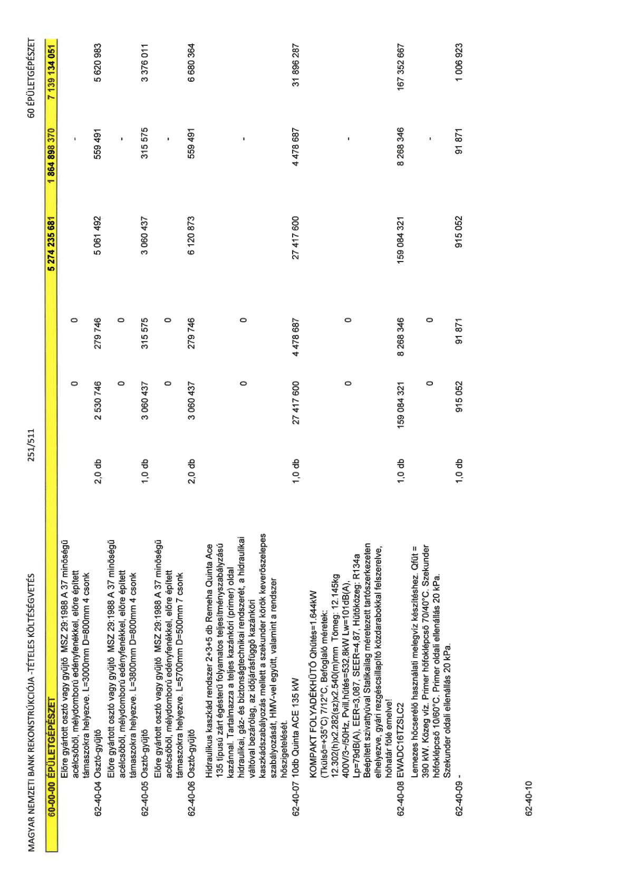

| Tétel | Menny. | Egys. | Anyag e.ár (net HUF) | Díj e.ár (net HUF) | Anyag összesen (net HUF) | Díj összesen (net HUF) | Anyag+Díj összesen (net HUF) |
|---|---|---|---|---|---|---|---|
| Előre gyártott osztó vagy gyűjtő MSZ 29:1988 A 37 minőségű acélcsőből, mélydomború edényfenékkel, előre épített támaszokra helyezve. L=3000mm D=800mm 4 csonk | 0 | 0 | 0 | 0 | 0 | 0 | 0 |
| 62-40-04 Osztó-gyűjtő | 2,0 | db | 2 530 746 | 279 746 | 5 061 492 | 559 491 | 5 620 983 |
| Előre gyártott osztó vagy gyűjtő MSZ 29:1988 A 37 minőségű acélcsőből, mélydomború edényfenékkel, előre épített támaszokra helyezve. L=3800mm D=800mm 4 csonk | 0 | 0 | 0 | 0 | 0 | 0 | 0 |
| 62-40-05 Osztó-gyűjtő | 1,0 | db | 3 060 437 | 315 575 | 3 060 437 | 315 575 | 3 376 011 |
| Előre gyártott osztó vagy gyűjtő MSZ 29:1988 A 37 minőségű acélcsőből, mélydomború edényfenékkel, előre épített támaszokra helyezve. L=5700mm D=500mm 7 csonk | 0 | 0 | 0 | 0 | 0 | 0 | 0 |
| 62-40-06 Osztó-gyűjtő | 2,0 | db | 3 060 437 | 279 746 | 6 120 873 | 559 491 | 6 680 364 |
| Hidraulikus kaszkád rendszer 2+3+5 db Remeha Quinta Ace 135 típusú zárt égésterű folyamatos teljesítményszabályzású kazánnal. Tartalmazza a teljes kazánköri (primer) oldal hidraulikai, gáz- és biztonságtechnikai rendszerét, a hidraulikai váltóval bezárólag, az időjárásfüggő kazánköri kaszkádszabályozás mellett a szekunder körök keverőszelepes szabályozását, HMV-vel együtt, valamint a rendszer hőszigetelését. | 0 | 0 | 0 | 0 | 0 | 0 | 0 |
| 62-40-07 10db Quinta ACE 135 kW | 1,0 | db | 27 417 600 | 4 478 687 | 27 417 600 | 4 478 687 | 31 896 287 |
| KOMPAKT FOLYADÉKHŰTŐ Qhűtés=1.644kW (Tkülső=+35°C) 7/12°C, Befoglaló méretek: 12.302(h)x2.282(sz)x2.540(m)mm Tömeg: 12.145kg 400V/3~/50Hz, Pvill,hűtés=532,8kW Lw=101dB(A), Lp=79dB(A), EER=3,087, SEER=4,87, Hűtőközeg: R134a Beépített szivattyúval Statikailag méretezett tartószerkezeten elhelyezve, gyári rezgéscsillapító közdarabokkal felszerelve, hóhatár fölé emelve! | 0 | 0 | 0 | 0 | 0 | 0 | 0 |
| 62-40-08 EWADC16TZSLC2 | 1,0 | db | 159 084 321 | 8 268 346 | 159 084 321 | 8 268 346 | 167 352 667 |
| Lemezes hőcserélő használati melegvíz készítéshez. Qfűt = 390 kW. Közeg víz. Primer hőfoklépcső 70/40°C. Szekunder hőfoklépcső 10/60°C. Primer oldali ellenállás 20 kPa. Szekunder oldali ellenállás 20 kPa. | 0 | 0 | 0 | 0 | 0 | 0 | 0 |
| 62-40-09 - | 1,0 | db | 915 052 | 91 871 | 915 052 | 91 871 | 1 006 923 |
